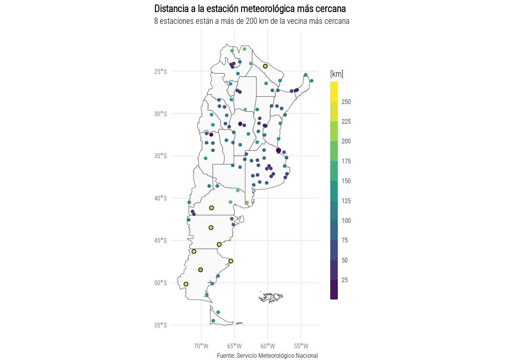

Datos
Ubicación de las estaciones meteorológicas del Servicio Meteorológico
Nacional disponibles en: www.smn.gob.ar/descarga-de-datos.
Pero parsear ese archivo para usarlo en R es una cosa que se hace solo
una vez en la vida por lo que vamos a usar los datos guardados en un
repo, limpios y listos para usar. Porque la realidad es que no se han
agregado estaciones nuevas.
estaciones <- fread("https://raw.githubusercontent.com/eliocamp/r-clima/fffb3fa596bc73afeeaa2a6296804da436e82fd3/datos/estaciones_smn.csv") %>%
.[provincia != "ANTARTIDA"] # Para hacer un mapa mas chiquito sin la Antartida
estaciones %>%
head(10) %>%
knitr::kable()
| AZUL AERO |
BUENOS AIRES |
-59.53 |
-36.50 |
147 |
87641 |
SAZA |
CENTRO |
| BAHIA BLANCA AERO |
BUENOS AIRES |
-62.10 |
-38.44 |
83 |
87750 |
SAZB |
CENTRO |
| BENITO JUAREZ AERO |
BUENOS AIRES |
-59.47 |
-37.43 |
207 |
87649 |
SAZJ |
CENTRO |
| BOLIVAR AERO |
BUENOS AIRES |
-61.40 |
-36.12 |
94 |
87640 |
SAZI |
CENTRO |
| CAMPO DE MAYO AERO |
BUENOS AIRES |
-58.40 |
-34.32 |
26 |
87570 |
SADO |
CENTRO |
| CORONEL PRINGLES AERO |
BUENOS AIRES |
-61.20 |
-38.10 |
247 |
87683 |
SABP |
CENTRO |
| CORONEL SUAREZ AERO |
BUENOS AIRES |
-61.53 |
-37.26 |
233 |
87637 |
SAZC |
CENTRO |
| DOLORES AERO |
BUENOS AIRES |
-57.44 |
-36.21 |
9 |
87648 |
SAZD |
CENTRO |
| EL PALOMAR AERO |
BUENOS AIRES |
-58.36 |
-34.36 |
12 |
87571 |
SADP |
CENTRO |
| EZEIZA AERO |
BUENOS AIRES |
-58.32 |
-34.49 |
20 |
87576 |
SAEZ |
CENTRO |
mapa <- rnaturalearth::ne_states(c("Argentina", "Falkland Islands"), returnclass = "sf")
Primer intento
El mapa que sigue cumple con la consigna de hoy pero no es
particularmente interesante graficar solo la ubicación de las
estaciones. Seguro nos da una idea de la inhomogeneidad de la ubicación
de las estaciones que depende en gran medida de donde vive la gente
en Argentina.
ggplot(estaciones, aes(lon, lat)) +
geom_sf(data = mapa, inherit.aes = FALSE, fill = "grey98") +
geom_point(size = 1, color = "darkorange", alpha = 0.5) +
labs(x = NULL, y = NULL,
title = "Ubicación de las estaciones meteorológicas \noficiales en Argentina",
caption = "Fuente: Servicio Meteorológico Nacional") +
theme_minimal(base_size = 8,
base_family = "Roboto Condensed Light") +
theme(plot.title.position = "plot")

Calculemos entonces la distancia de cada estación a su vecina más
cercana. Cómo estamos trabajando con latitudes y longitudes en un globo,
la distancia euclidia no es suficiente. Es decir, 13º de distancia al
norte de Argentina no equivale a la misma distancia en kilómetros en el
sur de la Patagonia. Necesitamos tener en cuenta esto y para eso la
libreria geodist funciona barbaro.
dist <- geodist(estaciones[, c("lon", "lat")], measure = "geodesic")
colnames(dist) <- estaciones$numeroOACI
rownames(dist) <- estaciones$numeroOACI
dist <- reshape2::melt(dist, value.name = "distancia") %>%
setDT() %>%
setnames(c("Var1", "Var2"), c("numeroOACI", "vecina")) %>%
.[numeroOACI != vecina] %>%
.[, .SD[distancia == min(distancia)], by = .(numeroOACI)]
estaciones <- estaciones[dist, on = .NATURAL]
Segundo intento
Para sorpresa de nadie, muchas de las estaciones en la Patagonia
estan aisladas del resto, particularmente en la zona central donde la
densidad de población es bajisima.
estaciones %>%
ggplot(aes(lon, lat)) +
geom_sf(data = mapa, inherit.aes = FALSE, fill = "grey98") +
geom_point(aes(color = distancia/1000), size = 1, alpha = 1) +
geom_point(data = estaciones[distancia > 200*1000], shape = 21) +
scale_color_viridis_c(breaks = seq(0, 300, 25),
guide = guide_colorsteps(barwidth = 0.5,
barheight = 15),
direction = 1) +
labs(x = NULL, y = NULL, color = "[km]",
title = "Distancia a la estación meteorológica más cercana",
subtitle = "8 estaciones están a más de 200 km de la vecina más cercana",
caption = "Fuente: Servicio Meteorológico Nacional") +
theme_minimal(base_size = 8,
base_family = "Roboto Condensed Light") +
theme(plot.title.position = "plot",
plot.title = element_text(face = "bold"))

#ggsave("day1.png", device = png, type = "cairo", bg = "white", width = 10, height = 18, units = "cm", dpi = 150)
LS0tCnRpdGxlOiAnRMOtYSAxOiBQdW50b3MnCm91dHB1dDoKICBodG1sX2RvY3VtZW50OgogICAgY29kZV9kb3dubG9hZDogdHJ1ZQotLS0KCmBgYHtyIHNldHVwLCBpbmNsdWRlPUZBTFNFfQprbml0cjo6b3B0c19jaHVuayRzZXQoZWNobyA9IFRSVUUpCgpsaWJyYXJ5KGRwbHlyKQpsaWJyYXJ5KGdncGxvdDIpCmxpYnJhcnkoZGF0YS50YWJsZSkKbGlicmFyeShnZW9kaXN0KQpgYGAKCiMjIERhdG9zCgpVYmljYWNpw7NuIGRlIGxhcyBlc3RhY2lvbmVzIG1ldGVvcm9sw7NnaWNhcyBkZWwgU2VydmljaW8gTWV0ZW9yb2zDs2dpY28gTmFjaW9uYWwgZGlzcG9uaWJsZXMgZW46IFt3d3cuc21uLmdvYi5hci9kZXNjYXJnYS1kZS1kYXRvc10oaHR0cHM6Ly93d3cuc21uLmdvYi5hci9kZXNjYXJnYS1kZS1kYXRvcykuIFBlcm8gcGFyc2VhciBlc2UgYXJjaGl2byBwYXJhIHVzYXJsbyBlbiBSIGVzIHVuYSBjb3NhIHF1ZSBzZSBoYWNlIHNvbG8gdW5hIHZleiBlbiBsYSB2aWRhIHBvciBsbyBxdWUgdmFtb3MgYSB1c2FyIGxvcyBkYXRvcyBndWFyZGFkb3MgZW4gdW4gcmVwbywgbGltcGlvcyB5IGxpc3RvcyBwYXJhIHVzYXIuIFBvcnF1ZSBsYSByZWFsaWRhZCBlcyBxdWUgbm8gc2UgaGFuIGFncmVnYWRvIGVzdGFjaW9uZXMgbnVldmFzLiAKCmBgYHtyfQplc3RhY2lvbmVzIDwtIGZyZWFkKCJodHRwczovL3Jhdy5naXRodWJ1c2VyY29udGVudC5jb20vZWxpb2NhbXAvci1jbGltYS9mZmZiM2ZhNTk2YmM3M2FmZWVhYTJhNjI5NjgwNGRhNDM2ZTgyZmQzL2RhdG9zL2VzdGFjaW9uZXNfc21uLmNzdiIpICU+JSAKICAuW3Byb3ZpbmNpYSAhPSAiQU5UQVJUSURBIl0gIyBQYXJhIGhhY2VyIHVuIG1hcGEgbWFzIGNoaXF1aXRvIHNpbiBsYSBBbnRhcnRpZGEKCmVzdGFjaW9uZXMgJT4lIAogIGhlYWQoMTApICU+JSAKICBrbml0cjo6a2FibGUoKQoKbWFwYSA8LSBybmF0dXJhbGVhcnRoOjpuZV9zdGF0ZXMoYygiQXJnZW50aW5hIiwgIkZhbGtsYW5kIElzbGFuZHMiKSwgcmV0dXJuY2xhc3MgPSAic2YiKQpgYGAKCiMjIFByaW1lciBpbnRlbnRvCgpFbCBtYXBhIHF1ZSBzaWd1ZSBjdW1wbGUgY29uIGxhIGNvbnNpZ25hIGRlIGhveSBwZXJvIG5vIGVzIHBhcnRpY3VsYXJtZW50ZSBpbnRlcmVzYW50ZSBncmFmaWNhciBzb2xvIGxhIHViaWNhY2nDs24gZGUgbGFzIGVzdGFjaW9uZXMuIFNlZ3VybyBub3MgZGEgdW5hIGlkZWEgZGUgbGEgaW5ob21vZ2VuZWlkYWQgZGUgbGEgdWJpY2FjacOzbiBkZSBsYXMgZXN0YWNpb25lcyBxdWUgZGVwZW5kZSBlbiBncmFuIG1lZGlkYSBkZSAqZG9uZGUgdml2ZSBsYSBnZW50ZSBlbiBBcmdlbnRpbmEqLiAKCmBgYHtyfQpnZ3Bsb3QoZXN0YWNpb25lcywgYWVzKGxvbiwgbGF0KSkgKwogIGdlb21fc2YoZGF0YSA9IG1hcGEsIGluaGVyaXQuYWVzID0gRkFMU0UsIGZpbGwgPSAiZ3JleTk4IikgKwogIGdlb21fcG9pbnQoc2l6ZSA9IDEsIGNvbG9yID0gImRhcmtvcmFuZ2UiLCBhbHBoYSA9IDAuNSkgKwogIGxhYnMoeCA9IE5VTEwsIHkgPSBOVUxMLAogICAgICAgdGl0bGUgPSAiVWJpY2FjacOzbiBkZSBsYXMgZXN0YWNpb25lcyBtZXRlb3JvbMOzZ2ljYXMgIFxub2ZpY2lhbGVzIGVuIEFyZ2VudGluYSIsCiAgICAgICBjYXB0aW9uID0gIkZ1ZW50ZTogU2VydmljaW8gTWV0ZW9yb2zDs2dpY28gTmFjaW9uYWwiKSArCiAgdGhlbWVfbWluaW1hbChiYXNlX3NpemUgPSA4LAogICAgICAgICAgICAgICAgYmFzZV9mYW1pbHkgPSAiUm9ib3RvIENvbmRlbnNlZCBMaWdodCIpICsKICB0aGVtZShwbG90LnRpdGxlLnBvc2l0aW9uID0gInBsb3QiKQpgYGAKCkNhbGN1bGVtb3MgZW50b25jZXMgbGEgZGlzdGFuY2lhIGRlIGNhZGEgZXN0YWNpw7NuIGEgc3UgdmVjaW5hIG3DoXMgY2VyY2FuYS4gQ8OzbW8gZXN0YW1vcyB0cmFiYWphbmRvIGNvbiBsYXRpdHVkZXMgeSBsb25naXR1ZGVzIGVuIHVuIGdsb2JvLCBsYSBkaXN0YW5jaWEgZXVjbGlkaWEgbm8gZXMgc3VmaWNpZW50ZS4gRXMgZGVjaXIsIDEzwrogZGUgZGlzdGFuY2lhIGFsIG5vcnRlIGRlIEFyZ2VudGluYSBubyBlcXVpdmFsZSBhIGxhIG1pc21hIGRpc3RhbmNpYSBlbiBraWzDs21ldHJvcyBlbiBlbCBzdXIgZGUgbGEgUGF0YWdvbmlhLiBOZWNlc2l0YW1vcyB0ZW5lciBlbiBjdWVudGEgZXN0byB5IHBhcmEgZXNvIGxhIGxpYnJlcmlhIGBnZW9kaXN0YCBmdW5jaW9uYSBiYXJiYXJvLgoKYGBge3J9CgpkaXN0IDwtIGdlb2Rpc3QoZXN0YWNpb25lc1ssIGMoImxvbiIsICJsYXQiKV0sICBtZWFzdXJlID0gImdlb2Rlc2ljIikgCgpjb2xuYW1lcyhkaXN0KSA8LSBlc3RhY2lvbmVzJG51bWVyb09BQ0kKcm93bmFtZXMoZGlzdCkgPC0gZXN0YWNpb25lcyRudW1lcm9PQUNJCgpkaXN0IDwtIHJlc2hhcGUyOjptZWx0KGRpc3QsIHZhbHVlLm5hbWUgPSAiZGlzdGFuY2lhIikgJT4lIAogIHNldERUKCkgJT4lIAogIHNldG5hbWVzKGMoIlZhcjEiLCAiVmFyMiIpLCBjKCJudW1lcm9PQUNJIiwgInZlY2luYSIpKSAlPiUgCiAgLltudW1lcm9PQUNJICE9IHZlY2luYV0gJT4lIAogIC5bLCAuU0RbZGlzdGFuY2lhID09IG1pbihkaXN0YW5jaWEpXSwgYnkgPSAuKG51bWVyb09BQ0kpXQoKZXN0YWNpb25lcyA8LSBlc3RhY2lvbmVzW2Rpc3QsIG9uID0gLk5BVFVSQUxdCmBgYAoKIyMgU2VndW5kbyBpbnRlbnRvCgpQYXJhIHNvcnByZXNhIGRlIG5hZGllLCBtdWNoYXMgZGUgbGFzIGVzdGFjaW9uZXMgZW4gbGEgUGF0YWdvbmlhIGVzdGFuIGFpc2xhZGFzIGRlbCByZXN0bywgcGFydGljdWxhcm1lbnRlIGVuIGxhIHpvbmEgY2VudHJhbCBkb25kZSBsYSBkZW5zaWRhZCBkZSBwb2JsYWNpw7NuIGVzIGJhamlzaW1hLiAKCmBgYHtyfQplc3RhY2lvbmVzICU+JSAKICBnZ3Bsb3QoYWVzKGxvbiwgbGF0KSkgKwogIGdlb21fc2YoZGF0YSA9IG1hcGEsIGluaGVyaXQuYWVzID0gRkFMU0UsIGZpbGwgPSAiZ3JleTk4IikgKwogIGdlb21fcG9pbnQoYWVzKGNvbG9yID0gZGlzdGFuY2lhLzEwMDApLCBzaXplID0gMSwgYWxwaGEgPSAxKSArCiAgZ2VvbV9wb2ludChkYXRhID0gZXN0YWNpb25lc1tkaXN0YW5jaWEgPiAyMDAqMTAwMF0sIHNoYXBlID0gMjEpICsKICBzY2FsZV9jb2xvcl92aXJpZGlzX2MoYnJlYWtzID0gc2VxKDAsIDMwMCwgMjUpLCAKICAgICAgICAgICAgICAgICAgICAgICAgZ3VpZGUgPSBndWlkZV9jb2xvcnN0ZXBzKGJhcndpZHRoID0gMC41LAogICAgICAgICAgICAgICAgICAgICAgICAgICAgICAgICAgICAgICAgICAgICAgICAgYmFyaGVpZ2h0ID0gMTUpLAogICAgICAgICAgICAgICAgICAgICAgICBkaXJlY3Rpb24gPSAxKSArCiAgbGFicyh4ID0gTlVMTCwgeSA9IE5VTEwsIGNvbG9yID0gIltrbV0iLAogICAgICAgdGl0bGUgPSAiRGlzdGFuY2lhIGEgbGEgZXN0YWNpw7NuIG1ldGVvcm9sw7NnaWNhIG3DoXMgY2VyY2FuYSIsCiAgICAgICBzdWJ0aXRsZSA9ICI4IGVzdGFjaW9uZXMgZXN0w6FuIGEgbcOhcyBkZSAyMDAga20gZGUgbGEgdmVjaW5hIG3DoXMgY2VyY2FuYSIsCiAgICAgICBjYXB0aW9uID0gIkZ1ZW50ZTogU2VydmljaW8gTWV0ZW9yb2zDs2dpY28gTmFjaW9uYWwiKSArCiAgdGhlbWVfbWluaW1hbChiYXNlX3NpemUgPSA4LAogICAgICAgICAgICAgICAgYmFzZV9mYW1pbHkgPSAiUm9ib3RvIENvbmRlbnNlZCBMaWdodCIpICsKICB0aGVtZShwbG90LnRpdGxlLnBvc2l0aW9uID0gInBsb3QiLAogICAgICAgIHBsb3QudGl0bGUgPSBlbGVtZW50X3RleHQoZmFjZSA9ICJib2xkIikpCgojZ2dzYXZlKCJkYXkxLnBuZyIsIGRldmljZSA9IHBuZywgdHlwZSA9ICJjYWlybyIsIGJnID0gIndoaXRlIiwgd2lkdGggPSAxMCwgaGVpZ2h0ID0gMTgsIHVuaXRzID0gImNtIiwgZHBpID0gMTUwKQpgYGAKCg==